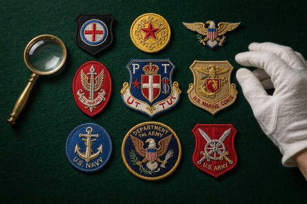
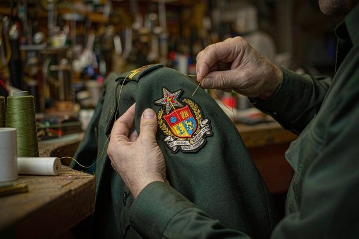

Military Patches: History, Meaning and Modern Uses
Military patches are where the modern patch industry began — a small piece of embroidered cloth that identifies a unit, an assignment and a history at a single glance. This guide traces how shoulder insignia grew from First World War necessity into a global visual language, breaks down the construction details that made military patches so durable, and shows how veterans' groups, collectors, cadets and tactical brands borrow the same standards today.

From Battlefield Necessity to Visual Language
The shoulder sleeve insignia is barely a century old. Before 1918, soldiers identified their formations by buttons, cap badges and word of mouth — a system that collapsed the moment armies grew into mass conscript forces moving between fronts faster than paperwork could follow. The United States Army's 81st Division is credited with the first shoulder patch, a wildcat silhouette on a khaki disc sewn onto a training uniform, and the idea spread through the American Expeditionary Forces within months: a commander wanted to know at a glance who belonged where, and soldiers discovered they liked wearing their unit's story.
That instinct — identity worn on the sleeve — is much older than the patch itself. It descends directly from the heraldic tradition, where a knight's surcoat carried his colors so he could be recognized through armor. Military patches simply moved the coat of arms onto cloth that could be mass produced. The vocabulary survives: crests, mottos on scrolls, shield shapes, beasts and eagles, each element chosen to say something specific about the unit that wears it.
Other nations built their own systems in parallel — British formation signs, Commonwealth divisional patches, Soviet guards badges — and by the Second World War the shoulder patch was a universal language. Veterans carried the habit home. Unit associations still meet under their old colors, and jackets across decades of civilian life have carried those sleeve marks as proof of where someone served.
Anatomy of a Military Patch: Why They Are Built Like That
Military patches survived because every design choice answers a hard requirement. Understanding those choices is the fastest way to design a better civilian patch, because the constraints never went away:
- Merrowed borders. The overlocked edge prevents fraying through field wear, repeated washing and packing into kit bags. Civilian patches inherited the merrow edge as the default finish for any shape that permits one.
- Flat embroidery coverage. Field insignia uses high thread coverage on a twill background — the design must survive mud, sun and abrasion, so delicate open-weave sections are avoided entirely.
- Restricted palettes. Full-color dress patches give way to subdued versions where visibility matters, a doctrine explained below. The thread substitution logic between versions is exactly the color-management problem described in our thread types guide.
- Standardized sizes and positions. Shoulder insignia typically runs 2 to 3 inches with fixed placement on the left sleeve, dress right sleeve for combat-earned versions. The measurement discipline behind that consistency is the same one in our placement guide.
- Sew-on construction. Whatever the decoration budget, the attachment method assumes hard laundering — the reasoning that also makes sew-on the default for industrial uniforms, covered in our uniform patches guide.
The Subdued Color Doctrine
One of the most instructive episodes in patch history is the shift to subdued colors during the Vietnam era. Full-color insignia — bright thread on white or gold — turned out to be a liability against jungle terrain, so armies reissued the same designs in olive drab, black and brown. The crest stayed identical in shape and composition; only the palette changed.
Two lessons carry into any modern patch program. First, a strong design survives translation into two, three or four muted colors — if a logo falls apart when desaturated, it was never strong enough for embroidery anyway. Second, the subdued-versus-full-color pairing became a design language of its own: tactical brands now issue both versions of the same morale patch, letting the wearer choose loud or low-profile. When you recolor a design for dark garments, keep one element of contrast — an edge, a highlight, a single bright fill — or the whole patch disappears at conversational distance.
The Main Types of Military Patches
- Unit and division patches. The shoulder sleeve insignia itself — heraldic shields, animals and mottos identifying a formation. The bulk of any collection and the deepest design tradition.
- Tabs and rockers. Arc-shaped strips above or below the main patch (airborne, mountain, special-designation tabs). Their curved shapes demand die-cut finishing; the shape options are compared in our die-cut shapes guide.
- Rank and qualification insignia. Chevrons, skill badges and trade marks — the functional layer that changed with every promotion.
- Morale patches. The unofficial layer: humorous, mascot-driven designs traded freely between personnel and now the dominant style in the civilian tactical market. PVC and glow variants trace their roots here.
- Commemorative and association patches. Anniversary crests, reunion marks and veterans' association badges — the category where history and modern production meet most often.

Where Military Patch Standards Show Up Today
The audience for this construction style is far wider than the armed forces, and most of our military-style orders come from civilian buyers:
| Buyer | What They Order | What They Borrow From Military Practice |
|---|---|---|
| Veterans' associations | Unit reunion crests, anniversary badges | Heraldic composition, subdued variants, sew-on backing |
| Cadet and youth programs | Rank chevrons, achievement badges | Standardized sizes and fixed placement charts |
| Tactical and airsoft brands | Morale patches, hook-and-loop team marks | Subdued palettes, Velcro backings, limited runs |
| Collectors and reenactors | Reproduction insignia, display sets | Period-accurate thread colors and merrow edges |
| Outdoor workwear brands | Heritage-look sleeve marks | High-coverage embroidery on tough twill |
The common thread is trust in a proven format. When a design needs to read as authentic — established, serious, a little rugged — the military construction playbook delivers that impression without saying a word.
Collecting, Display and Care
Collectors handle patches more than any other category, so a few care habits are worth borrowing. Store patches flat, away from direct sun, with acid-free tissue between stacked pieces; sunlight is what fades thread color over decades. Dust displayed pieces with a soft brush rather than water. For jackets that are actually worn, sew the patch on through both jacket layers where the fabric allows — the field-expedient method that has kept sleeve insignia attached for a century. When repairing a vintage piece, match thread sheen rather than exact shade; aged thread darkens, and a perfect color match in new thread will look wrong under old light.

Ordering Military-Style Patches
Most military-style projects are variations on a known design — a reunion crest that updates the year, an association badge that adds a chapter name. That makes them cheap to produce: send the existing patch or a clear photo, and the artwork can be redrawn vector-clean with the old construction logic intact. Subdued and full-color variants digitize from the same master file, so ordering both versions costs little more than one. Reenactors and collectors ordering reproduction insignia should specify thread colors against period references, since modern catalogs drift from wartime shades.
Sizes typically run 2 to 3 inches for shoulder wear and 1 to 2 inches for tabs and qualification marks. Because there is no minimum order, a veterans' chapter can start from a single dozen patches, and a collector can reproduce one missing piece from a set without paying setup twice — the digitized file is kept for every reorder.
Frequently Asked Questions (FAQ)
Q1: What side does a military patch go on?
Convention places unit insignia on the left shoulder, with combat-earned or foreign-award versions authorized on the right for dress wear. Reproduction, morale and civilian patches follow whichever convention the wearer's group uses — but pick one side and keep it consistent across the whole team or collection.
Q2: What is the difference between full-color and subdued military patches?
Full-color versions use bright thread for dress and garrison wear; subdued versions translate the identical design into olive drab, black and brown tones for field use. Both versions digitize from one master file, so ordering a pair of variants from one design is economical.
Q3: Can civilians wear military-style patches?
Civilian wear of reproduction insignia, veteran association crests and morale patches is broadly accepted, though wearing unearned decorations or impersonating service is restricted in most jurisdictions. Tactical brands, airsoft teams and collectors typically use original designs in the military visual style, which avoids the issue entirely.
Q4: How should a military patch be attached to a jacket?
Sew-on is the traditional and most durable method, applied through the sleeve fabric with matching thread. Iron-on backing works for light wear and display jackets. For tactical gear with loop panels, hook-and-loop backings let marks swap between garments — the option most morale-patch buyers choose.
Q5: Can I get a reproduction of a vintage unit patch?
Yes. A clear photo or the original patch is enough to redraw the artwork and match period thread colors as closely as modern materials allow. Send the reference, and we return a digital proof within 12 hours; there is no minimum order, so a single replacement piece is economical.
Conclusion: A Century-Old Format That Still Sets the Standard
Military patches earned their construction details the hard way — in field wear, industrial laundry and a century of accumulated meaning. Every modern patch borrows something from that lineage: the merrow edge, the flat coverage, the discipline of standard sizes, the idea that a small piece of cloth can carry a large identity. Design within that tradition and your patch inherits a century of credibility for free.
Send us your crest, logo or a photo of the patch you want reproduced, and we will redraw it vector-clean, match thread colors, and return a proof within 12 hours. No minimum order, sew-on and subdued variants included. Request a free quote and put your mark where a century of insignia has worn before.